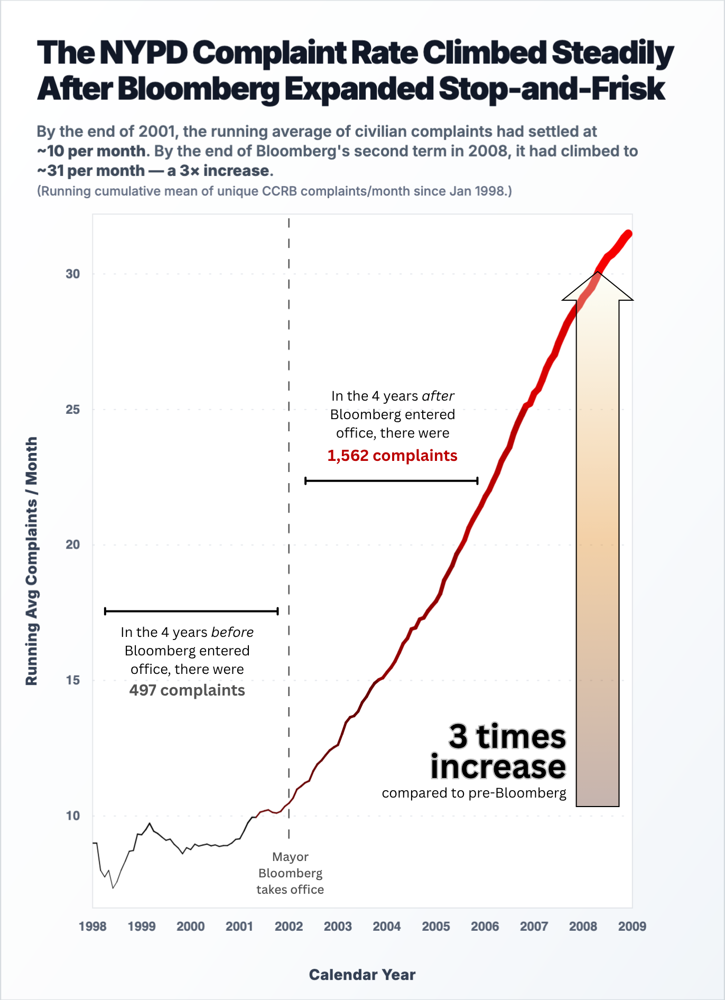
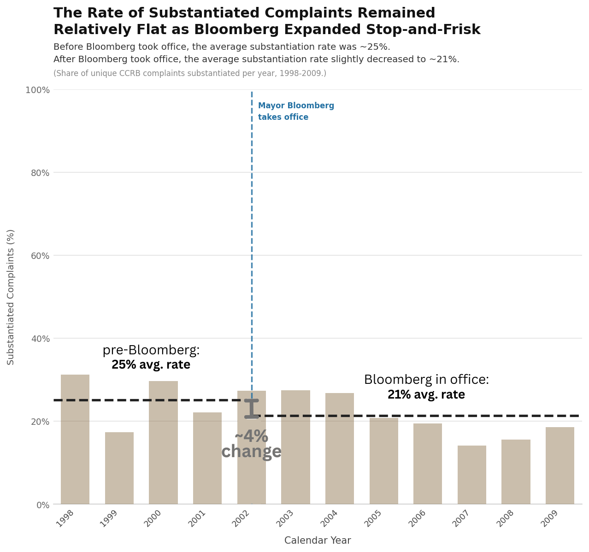

Proposition: Police misconduct spiked after Bloomberg implemented the stop-and-frisk policy.
FOR the Proposition

Design Decisions and Rationale:
-
Rationale 1: Cherry-picked time frames whose running avg. complaints/month values would result in the highest slopes post-Bloomberg; also, the y-axis begins around 5 and did not leave room above the maximum value, allowing the line’s slope to stretch more vertically
- Score: -2 — By truncating the dataset at 2009—despite data being available until the end of Bloomberg’s last term—the chart ensures the running average’s slope is maximally high. Thus, this design choice prevents the viewer from observing any plateaus in complaint rates that occurred during the latter half of the Bloomberg administration. Also, the y-axis starts around 5 instead of 0, which removes the visual baseline. This manipulates the viewer's perception, for a 3x numerical increase looks much more visually steep because the bottom chunk of the data is cut out. More subtly, I chose to start the y-axis around 5 as viewers would have a harder time identifying that the y-axis was manipulated compared to if it started at a higher value—which I considered doing.
-
Rationale 2: Used running average complaints/month rather than raw complaints/month
- Score: -1 — By using a "running cumulative mean" instead of discrete yearly/monthly averages, the line smooths over the data and will always trend upwards as long as the new monthly values are higher than the old historical average. This entirely masks any individual months or years post-2002 where complaints might have actually dropped or plateaued. However, I would argue that a running cumulative mean is more visually informative than plotting raw complaints/month. I did try the latter, where I saw a lot of variance in the data that might complicate how a viewer might interpret the obviously upward trend. Conversely, using a running average smooths out such variance.
-
Rationale 3: In the title and subtitle, the running average metric and data source were clearly identified
- Score: +1.5 — By explicitly naming the metric as a running cumulative mean, the chart is transparent about how the data was transformed to show a long-term trend. This transparency prevents viewers from mistaking the smooth line for raw monthly totals, which would look a lot "noisier" and harder to interpret. Additionally, the attribution of the data to "unique CCRB complaints" specifically references Civilian Complaint Review Board—i.e., the source of the data—providing the viewer an opportunity to verify the claims put forward in the visualization.
-
Rationale 4: Redundantly encoded y-value magnitude in both a binned sequential color scale and line width
- Score: -1 — In this case, the fact that the redundant encoding led to the dramatization of the change in the running average—is obviously a deception technique. However, I would argue that if the running average trend later went down, the redundant encoding would equally make the graph more interpretable in the converse way. Further, I used a binned color scale instead of a continuous color scale, which makes y-values more discretely interpretable instead of ambiguous.
-
Rationale 5: Included annotations comparing number of total complaints in the 4 years immediately preceding and following Bloomberg
- Score: -1.5 — By juxtaposing running averages per month with aggregate totals (497 versus 1,562 complaints), the visualization conflates volume with rate. This design choice is intended to overwhelm the viewer with scale, providing a sort of “redundant insight” to bolster the upward trend of the running average.
AGAINST the Proposition

-
Rationale 1: Aggregating police complaints via percentages
- Score: -1 — Misleading in this case since the overall yearly number of police complaints is increasing year by year, so a lower percentage of substantiated complaints could still mean a higher overall number of substantiated complaints.
-
Rationale 2: Only showing substantiated rates
- Score: -2 — Deceiving because a large number of complaints never get resolved and get reported as unsubstantiated instead of exonerated or substantiated. In fact, the percentage of unsubstantiated complaints rises throughout Bloomberg’s tenure.
-
Rationale 3: Neutral colors to reflect the lack of significant change
- Score: 1 — It is a common technique to use appropriate colors to convey the message of a visual
Final Reflection
Our definition of “ethical analysis and visualization” we all agreed on: “presenting visualizations in a way that represents data in its truest forms, without design choices that might alter the interpretation of the data in a biased way.” Through creating our two final visualizations, which argued opposing sides of whether the NYPD Complaint Rate increased or didn’t increase after Mayor Bloomberg enacted his “Stop-and-Frisk” policy, we explored how far we could affect the interpretation of the data without making egregiously unethical design choices. Starting out, our biggest obstacle was finding and actually choosing what observation(s) our visualizations would represent. It essentially came down to blindly generating data plots and attempting to find any noticeable trends we could try explaining with real world events that appeared to correlate with our observations. We ended up with our final strongest observations and events we could make inferences from collaborative brainstorming, and from there, the part of creating our visualizations became pretty straightforward. Our first plot, which supported the increase, utilized the following persuasion, earnest, and deception tactics: sequential color palettes such as the contrast of discrete binned black and red gradient used to to imply low and high rates of complaints, bolding/highlighting specific details we wanted our viewers to place a greater emphasis on including bolded statistics in the annotations conveying change, cherry-picking time frames whose complaints/month values would result in the lowest and highest slopes for pre- and post-Bloomberg, and having our maximum value be the upper bound for our y-axis, allowing the line’s slope to stretch more vertically. Our second plot used similar tactics. We incorporated the opposite of a gradient, using muted and constant colors indicative of no change. A small bin count used when aggregating increased variance which we took advantage of to hide any trends that existed. In addition, we focused on visualizing the rate of substantiated claims instead of the overall quantity which in itself is deceptive as it hides the fact that the overall quantity changed. Although choosing to use averages as our primary significant method of representing large swaths of data resulted in us losing some nuance in the data, it was arguably one of the most arbitrary and fair choices when it comes to representing data. While doing all of this, we found some surprises in how easy it was to actually manipulate our visualizations in favor of our arguments, how important specific domain knowledge was when interpreting data—such as how the implementation of body cams were likely have have emboldened victims when it came to deciding if they should file their complaints—and how helpful it was to branch out when choosing design tools including Canva and HTML. Through our process, we came up with a general idea of a bound between persuasive and misleading design choices. Acceptable persuasion can take the form of making attention to, or highlighting observations that do exist in the data, which in itself isn’t totally immoral—as long as you are transparent about competing trends. An example of this from our visualization supporting the complaint increase were the statistical annotations and definitions on what was measured. On the other hand, purposefully manipulating the data or analysis to convey something that doesn’t exist is generally more immoral. We purposefully made this bound pretty vague, as in the real world, identifying intentional deceit in visualizations can be extremely difficult to discern. Our example visualizations on NYPD complaints in respect to Mayor Bloomberg’s policies represent this, and shows how visualizations can be a dangerous tool in deception, misinformation, and propaganda. Visualizations carry the responsibility of interpreting data so viewers don’t have to, and it’s a moral obligation for those creating them to do so arbitrarily like a viewing glass…a medium without distortion.